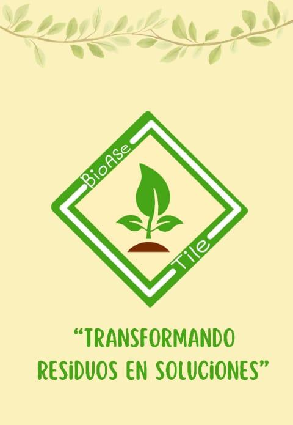

# BioAse Tile ### *Transformando residuos en soluciones* Losetas ecológicas fabricadas con aserrín, pulpa de papel reciclado y bioplástico natural. Una alternativa sustentable hecha en Nuevo Progreso, Tamaulipas. [**🌐 Visitar sitio web →**](https://bioasetile.github.io/bioase-tile/)   BioAse Tile es un emprendimiento estudiantil enfocado en el desarrollo de losetas decorativas ecológicas a partir de residuos orgánicos. Nace como respuesta a dos problemas: el alto impacto ambiental de los materiales de construcción tradicionales, y la acumulación de residuos orgánicos que no son aprovechados.
Cada loseta combina:
Cero plástico convencional. Cero químicos sintéticos.
Proyecto desarrollado para la materia Emprendimiento e Innovación.
Sitio web hecho con tecnologías web nativas, sin dependencias pesadas:
Diseño 100% responsivo, optimizado para dispositivos móviles y desktop.
bioase-tile/
├── index.html # Página principal
├── logo.jpg # Logo de la marca
├── ubicacion.jpg # Mapa de ubicación
├── producto-final.jpg # Foto del producto terminado
├── proceso-aserrin.jpg # Foto: aserrín tratado
├── proceso-bioplastico.jpg # Foto: cocción del bioplástico
├── proceso-mezcla.jpg # Foto: mezcla del biocompuesto
├── proceso-nopal.jpg # Foto: baba de nopal
├── proceso-tratamiento.jpg # Foto: tratamiento manual
├── proceso-vertido.jpg # Foto: vertido sobre aserrín
├── README.md # Este archivo
└── LICENSE # Licencia MIT
No requiere instalación ni build. Simplemente:
git clone https://github.com/BioAseTile/bioase-tile.git
cd bioase-tile
Y abre index.html en cualquier navegador moderno.